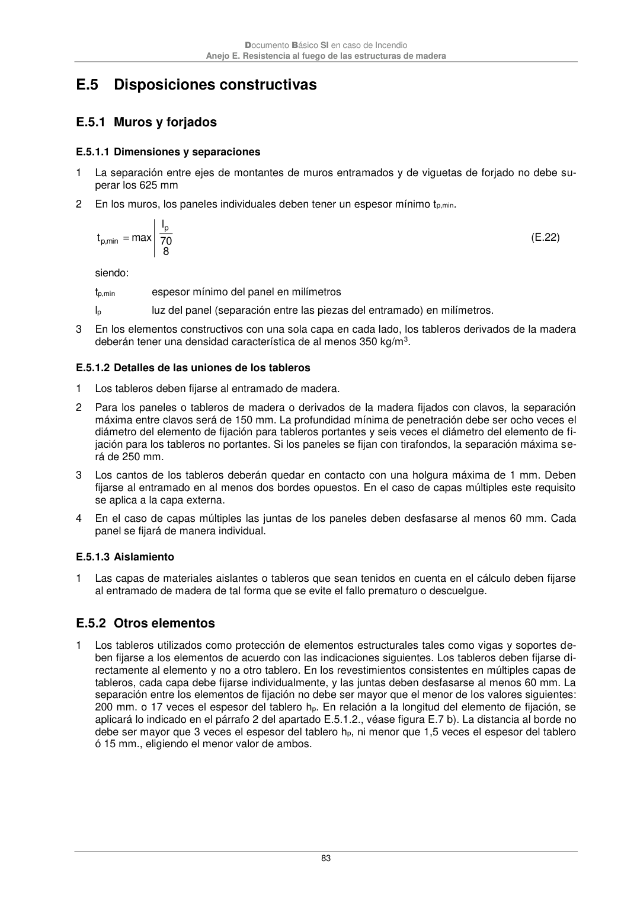

DB-SI · E.5 Disposiciones constructivas · E.5.1 Muros y forjados · E.5.1.1 Dimensiones y separaciones · E.5.1.2 Detalles de las uniones de los tableros · E.5.1.3 Aislamiento · E.5.2 Otros elementos · versión 2025-03-04
SHA256: 0a2e78cd62471d9cc5cfe2efbc6aa39fdbad73c124aea7b039f9de96c141e105 · página física 83 de 92 · métodos de encabezado
solo si están cotejados.
Formatos: Markdown · JSON de bloques · PDF p. 83 · imagen PNG
Documento Básico SI en caso de Incendio Anejo E. Resistencia al fuego de las estructuras de madera 83 E.5 Disposiciones constructivas E.5.1 Muros y forjados E.5.1.1 Dimensiones y separaciones 1 La separación entre ejes de montantes de muros entramados y de viguetas de forjado no debe su- perar los 625 mm 2 En los muros, los paneles individuales deben tener un espesor mínimo tp,min. 8 70 l max t p min , p (E.22) siendo: tp,min espesor mínimo del panel en milímetros lp luz del panel (separación entre las piezas del entramado) en milímetros. 3 En los elementos constructivos con una sola capa en cada lado, los tableros derivados de la madera deberán tener una densidad característica de al menos 350 kg/m3. E.5.1.2 Detalles de las uniones de los tableros 1 Los tableros deben fijarse al entramado de madera. 2 Para los paneles o tableros de madera o derivados de la madera fijados con clavos, la separación máxima entre clavos será de 150 mm. La profundidad mínima de penetración debe ser ocho veces el diámetro del elemento de fijación para tableros portantes y seis veces el diámetro del elemento de fi- jación para los tableros no portantes. Si los paneles se fijan con tirafondos, la separación máxima se- rá de 250 mm. 3 Los cantos de los tableros deberán quedar en contacto con una holgura máxima de 1 mm. Deben fijarse al entramado en al menos dos bordes opuestos. En el caso de capas múltiples este requisito se aplica a la capa externa. 4 En el caso de capas múltiples las juntas de los paneles deben desfasarse al menos 60 mm. Cada panel se fijará de manera individual. E.5.1.3 Aislamiento 1 Las capas de materiales aislantes o tableros que sean tenidos en cuenta en el cálculo deben fijarse al entramado de madera de tal forma que se evite el fallo prematuro o descuelgue. E.5.2 Otros elementos 1 Los tableros utilizados como protección de elementos estructurales tales como vigas y soportes de- ben fijarse a los elementos de acuerdo con las indicaciones siguientes. Los tableros deben fijarse di- rectamente al elemento y no a otro tablero. En los revestimientos consistentes en múltiples capas de tableros, cada capa debe fijarse individualmente, y las juntas deben desfasarse al menos 60 mm. La separación entre los elementos de fijación no debe ser mayor que el menor de los valores siguientes: 200 mm. o 17 veces el espesor del tablero hp. En relación a la longitud del elemento de fijación, se aplicará lo indicado en el párrafo 2 del apartado E.5.1.2., véase figura E.7 b). La distancia al borde no debe ser mayor que 3 veces el espesor del tablero hp, ni menor que 1,5 veces el espesor del tablero ó 15 mm., eligiendo el menor valor de ambos.
